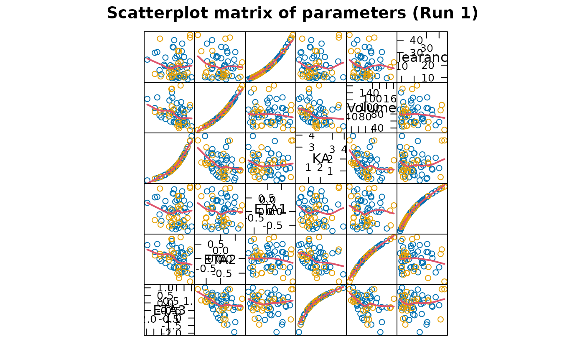

Plot scatterplot matrices of parameters, random parameters or covariates
Source:R/cov.splom.R, R/parm.splom.R, R/ranpar.splom.R
par_cov_splom.RdThese functions plot scatterplot matrices of parameters, random parameters and covariates.
Usage
cov.splom(
object,
main = xpose.multiple.plot.title(object = object, plot.text =
"Scatterplot matrix of covariates", ...),
varnames = NULL,
onlyfirst = TRUE,
smooth = TRUE,
lmline = NULL,
...
)
parm.splom(
object,
main = xpose.multiple.plot.title(object = object, plot.text =
"Scatterplot matrix of parameters", ...),
varnames = NULL,
onlyfirst = TRUE,
smooth = TRUE,
lmline = NULL,
...
)
ranpar.splom(
object,
main = xpose.multiple.plot.title(object = object, plot.text =
"Scatterplot matrix of random parameters", ...),
varnames = NULL,
onlyfirst = TRUE,
smooth = TRUE,
lmline = NULL,
...
)Arguments
- object
An xpose.data object.
- main
A string giving the plot title or
NULLif none.- varnames
A vector of strings containing labels for the variables in the scatterplot matrix.
- onlyfirst
Logical value indicating if only the first row per individual is included in the plot.
- smooth
A
NULLvalue indicates that no superposed line should be added to the graph. IfTRUEthen a smooth of the data will be superimposed.- lmline
logical variable specifying whether a linear regression line should be superimposed over an
xyplot.NULL~ FALSE. (y~x)- ...
Other arguments passed to
xpose.plot.histogram.
Details
The parameters or covariates in the Xpose data object, as specified in
object@Prefs@Xvardef$parms, object@Prefs@Xvardef$ranpar or
object@Prefs@Xvardef$covariates, are plotted together as scatterplot
matrices.
A wide array of extra options controlling scatterplot matrices are
available. See xpose.plot.splom for details.
To control the appearance of the labels and names in the scatterplot matrix
plots you can try varname.cex=0.5 and axis.text.cex=0.5 (this
changes the tick labels and the variable names to be half as large as
normal).
Functions
cov.splom(): A scatterplot matrix of covariatesparm.splom(): A scatterplot matrix of parametersranpar.splom(): A scatterplot matrix of random parameters
See also
xpose.plot.splom, xpose.panel.splom,
splom, xpose.data-class,
xpose.prefs-class
Other specific functions:
absval.cwres.vs.cov.bw(),
absval.cwres.vs.pred(),
absval.cwres.vs.pred.by.cov(),
absval.iwres.cwres.vs.ipred.pred(),
absval.iwres.vs.cov.bw(),
absval.iwres.vs.idv(),
absval.iwres.vs.ipred(),
absval.iwres.vs.ipred.by.cov(),
absval.iwres.vs.pred(),
absval.wres.vs.cov.bw(),
absval.wres.vs.idv(),
absval.wres.vs.pred(),
absval.wres.vs.pred.by.cov(),
absval_delta_vs_cov_model_comp,
addit.gof(),
autocorr.cwres(),
autocorr.iwres(),
autocorr.wres(),
basic.gof(),
basic.model.comp(),
cat.dv.vs.idv.sb(),
cat.pc(),
cwres.dist.hist(),
cwres.dist.qq(),
cwres.vs.cov(),
cwres.vs.idv(),
cwres.vs.idv.bw(),
cwres.vs.pred(),
cwres.vs.pred.bw(),
cwres.wres.vs.idv(),
cwres.wres.vs.pred(),
dOFV.vs.cov(),
dOFV.vs.id(),
dOFV1.vs.dOFV2(),
data.checkout(),
dv.preds.vs.idv(),
dv.vs.idv(),
dv.vs.ipred(),
dv.vs.ipred.by.cov(),
dv.vs.ipred.by.idv(),
dv.vs.pred(),
dv.vs.pred.by.cov(),
dv.vs.pred.by.idv(),
dv.vs.pred.ipred(),
gof(),
ind.plots(),
ind.plots.cwres.hist(),
ind.plots.cwres.qq(),
ipred.vs.idv(),
iwres.dist.hist(),
iwres.dist.qq(),
iwres.vs.idv(),
kaplan.plot(),
par_cov_hist,
par_cov_qq,
parm.vs.cov(),
parm.vs.parm(),
pred.vs.idv(),
ranpar.vs.cov(),
runsum(),
wres.dist.hist(),
wres.dist.qq(),
wres.vs.idv(),
wres.vs.idv.bw(),
wres.vs.pred(),
wres.vs.pred.bw(),
xpose.VPC(),
xpose.VPC.both(),
xpose.VPC.categorical(),
xpose4-package
Examples
## Here we load the example xpose database
xpdb <- simpraz.xpdb
## A scatterplot matrix of parameters, grouped by sex
parm.splom(xpdb, groups="SEX")

## A scatterplot matrix of ETAs, grouped by sex
ranpar.splom(xpdb, groups="SEX")
## Covariate scatterplots, with text customization
cov.splom(xpdb, varname.cex=0.4, axis.text.cex=0.4, smooth=NULL, cex=0.4)
#> SEX is categorical and will not be
#> shown in the scatterplot
#> RACE is categorical and will not be
#> shown in the scatterplot
#> SMOK is categorical and will not be
#> shown in the scatterplot
#> HCTZ is categorical and will not be
#> shown in the scatterplot
#> PROP is categorical and will not be
#> shown in the scatterplot
#> CON is categorical and will not be
#> shown in the scatterplot
#> OCC is categorical and will not be
#> shown in the scatterplot